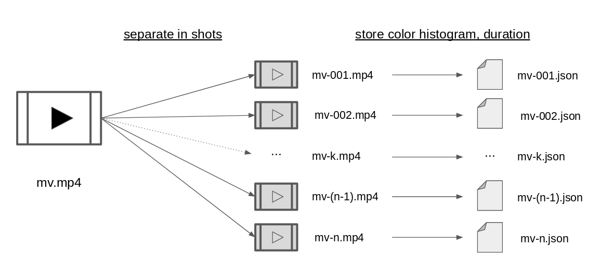

Generate a Music Video for your music !
Our AI algorithm will use segments of real Youtube MVs to match your music.
This works better with famous musics like pop, rock, hip-hop ...
Disclaimer : the generated video might contain segments of explicit content. Viewer discretion is advised.
Chose now your music !
- already {{count}} MVs generated -
{{error}}
How does it work

This algorithm is a novel method to automatically generate, from an input music, a music video made of segments of Youtube music videos which would fit this music. Once you have submitted your music file, the algorithm performs the following steps :
- Find boundaries in the input music at key music changes (transitions between verse/chorus/bridge etc.)
- Find input music genre
- Fetch in database videos with the same genre as found at step 2
- Apply K-Means on the color histogram feature to cluster together scenes from videos found at step 3
- Randomly select $C$ clusters from clusters created at step 4
- Assemble them around the boundaries found at step 1.
Step 1 is performed using the Python module MSAF with OLDA algorithm.
Step 2 is performed by recognizing the input music using ACR Cloud recognition API, which unfortunately limits 100 queries per day. If the algorithm asked you to manually input the music genre, this is probably the reason !
Step 4 is performed using Python module scikit-learn's built-in Kmeans function on data we stored in json files (see "database" section).
Further details on how to run this algorithm yourself are given on the project github.
The database
For the algorithm to work, you must have a data folder containing, for each video :
- the video file (ex: video1.mp4)
- a folder of the name name (ex: video1/) containing :
- - all the video scenes from this video (ex: video1_001.mp4, video1_002.mp4, ...)
- - for each video scene file, a json file with 2 keys : its color histogram (array size 768) and its length in seconds
- Download music videos from Youtube-8M dataset released by Youtube for research purposes.
- For each video file, separate the video into scenes (= video shots with no cuts)
- Calculate the color histogram for each scene
- Store the color histogram array and the duration for each scene into a json file
The color histograms are flattened 256 x 3 arrays calculated with cv2 Python module.
Step 2 is performed using Python module PySceneDetect with the default configuration (content-aware detection mode).
Some helper functions are provided on the project github to help you to easily reach this database configuration if you wish to try the algorithm yourself.
Experiments
The point of this work was to create music videos which would not be recognizable from music videos made by humans.
Did we succeed ?In order to evaluate this, we asked volunteeds to decide, in a batch of 30 videos, which were generated MVs, amateur MVs (fan-made), or professional MVs (officially made for the artist). The batch contained 15 generated MVs, 8 amateur and 7 professional. You can see the videos used for that experiment on this website.
The results were far better than expected ! In 45.5% of cases, our generated videos are mistaken for generated videos and in 21.6% of cases for amateur videos !
The below pie charts summarize the labels (PRO = professional, AMA = amateur, GEN = generated) given by the users for each kind of music video.
About
This project was done by Sarah Gross in the wake of her Master Thesis research at Tsinghua University, Beijing, China.
After a bachelor in engineering at CentraleSupélec, France, Sarah deepened her knowledge in computer science through several professional experiences and projects. She now pursues a dual-degree in Advanced Computing at the Machine Learning lab of Tsinghua University, China.
Acknowledgments
We are grateful to Xingxing Wei for his valuable advice throughout this research,
and to Hippolyte Barrault for his help on setting up this website.